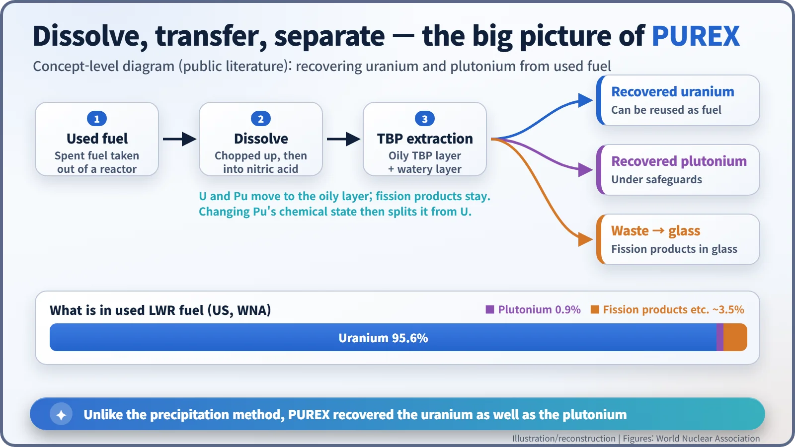
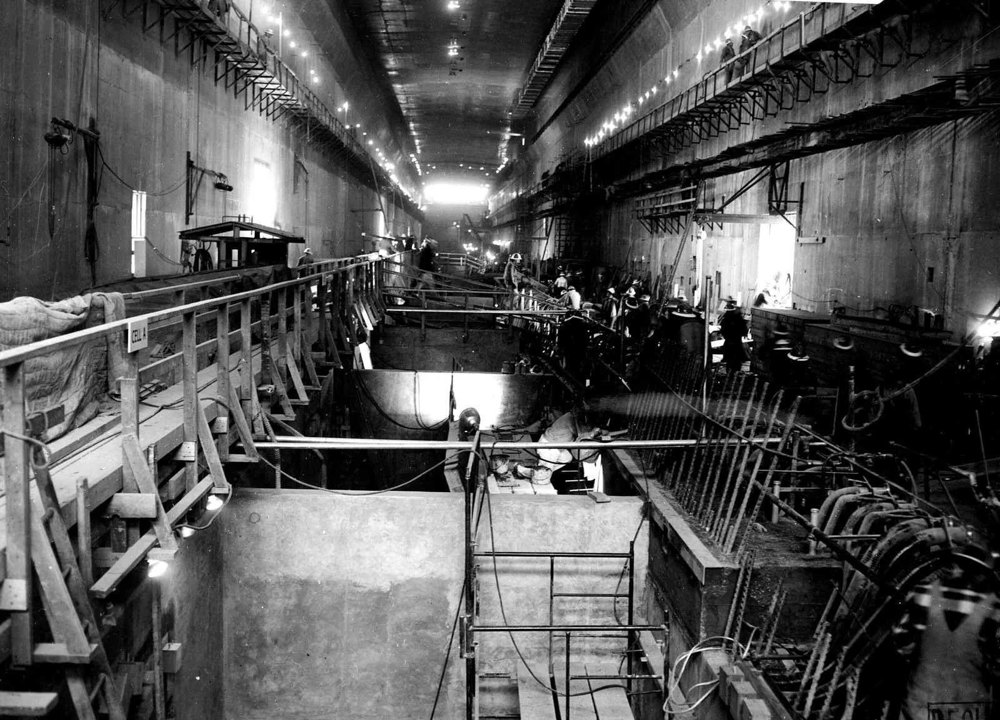
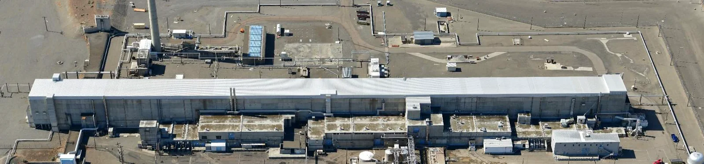
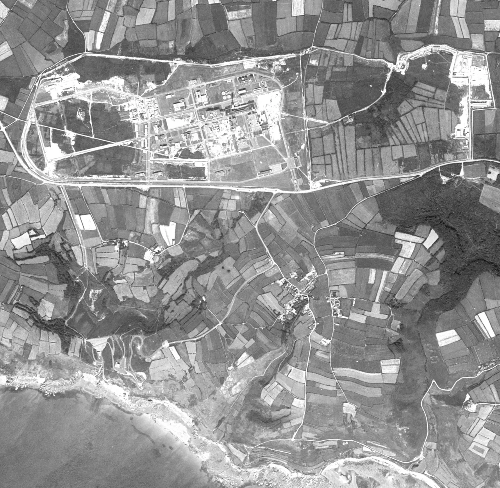
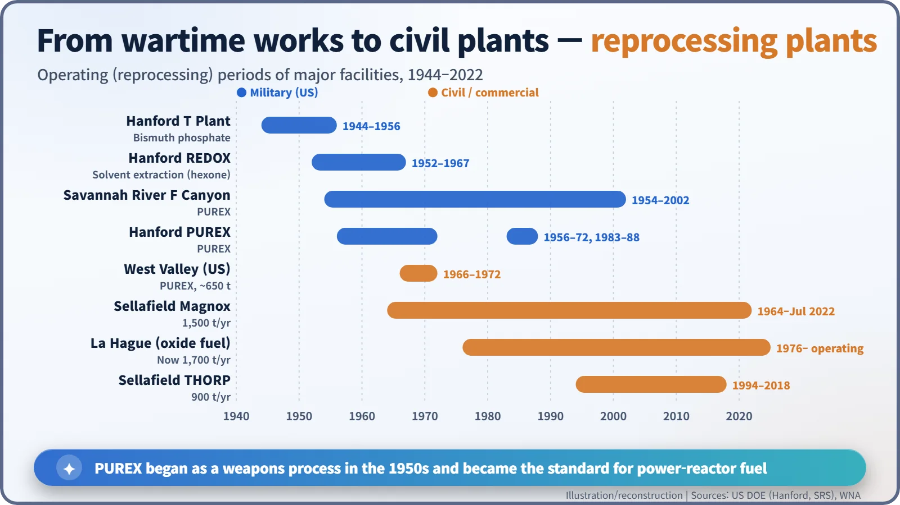

Nuclear History · 223
Two Liquids That Refuse to Mix — A History of PUREX Reprocessing
A 1947 patent on two immiscible liquids replaced a wartime method that threw the uranium away and became the standard of every commercial reprocessing plant.
In 1947 two Manhattan Project chemists patented a way to pull plutonium and uranium out of irradiated fuel using two liquids that do not mix. Called PUREX, it replaced a wartime method that threw the uranium away, ran at Savannah River from 1954 and at Hanford from 1956, and became the process every commercial reprocessing plant uses today, together with its burdens of high-level waste, cost and proliferation concerns.
Oil, vinegar and a very old idea
Shake a bottle of vinaigrette and set it down. For a moment it is cloudy; then it settles into two layers, oil on top and vinegar below. In those few seconds, some ingredients drift into the oil and others stay in the vinegar. Chemists call this solvent extraction. In the 1940s, American chemists used exactly this principle to pick uranium and plutonium out of fuel that had been through a reactor. The method is called PUREX (from "plutonium uranium extraction"), and today every commercial reprocessing plant in the world uses it. [6]
The first plant threw the uranium away
It began with a war. The Manhattan Project needed to pull plutonium out of the fuel irradiated in the Hanford reactors. Hanford's T Plant, completed in 1944, was the world's first large-scale plutonium separation facility. It used a bismuth phosphate precipitation process: chemicals were added to the dissolved fuel so that the plutonium settled out and could be collected. It worked, but the uranium, which makes up almost all of the fuel, was not recovered; it went off with the liquid waste. [4]
The next generation was Hanford's REDOX plant, which ran from 1952 to 1967. It used continuous solvent extraction, so throughput rose sharply, but its solvent, hexone, evaporates easily and catches fire easily. [3]
A patent kept secret for 13 years
The answer was already sitting in a drawer. At the University of Chicago's Metallurgical Laboratory, two chemists working on plutonium chemistry, Herbert H. Anderson and Larned B. Asprey, filed a patent on 8 May 1947 titled "Solvent extraction process for plutonium". The patent states that "tributyl phosphate is a very effective solvent for extracting plutonium from aqueous solutions." Tributyl phosphate (TBP) is far less volatile and less hazardous than hexone. The patent was held back under secrecy and granted only on 9 February 1960, some 13 years after filing. (This Anderson is not the physicist Herbert L. Anderson of the first reactor, CP-1.) [1]
Dissolve, shake, separate
The idea is close to the vinaigrette bottle. Used fuel is chopped up and dissolved in nitric acid, so uranium, plutonium and fission products end up in one solution. Bring that into contact with TBP dissolved in a kerosene-like oil, and the uranium and plutonium move into the oily layer while the fission products stay in the watery one. Then the chemical state of the plutonium is changed, sending it back into the water and away from the uranium. That is why some texts spell the name out as "plutonium uranium reduction extraction". Recovering both elements, not just plutonium, was the big difference from precipitation.
How much is there to recover? According to the World Nuclear Association (WNA), used fuel from a US light-water reactor is roughly 95.6% uranium, 0.9% plutonium, and about 3.5% fission products and other elements. That remainder becomes high-level liquid waste, which today is mixed into glass and solidified (vitrification). [6]

A 1,000-foot plant in the desert
PUREX first ran at full scale at the Savannah River Site in South Carolina, where F Canyon started up in 1954. At Hanford, the PUREX Plant opened in 1956, the fifth and last chemical processing facility built on the site. It is about 1,000 feet (some 300 m) long and 104 feet high, with about 40 feet below ground. Its heart, the "canyon", is a thick concrete gallery about 860 feet long, where 11 cells each handled one step of the process. The plant ran from 1956 to 1972 and again from 1983 to 1988. [5] [2]


From weapons process to civil industry
From the 1960s, PUREX turned to power-reactor fuel. The West Valley plant in New York State operated from 1966 to 1972 and processed about 650 tonnes of used fuel. A 1,500-tonne-a-year plant built at Barnwell, South Carolina, never operated after a 1977 change in US government policy.
Across the Atlantic the line continued. At Sellafield in England, Magnox fuel was reprocessed for 58 years until the last fuel arrived in July 2022, and the THORP plant ran from 1994 to November 2018. France's La Hague has reprocessed light-water-reactor oxide fuel since 1976 and now has a capacity of about 1,700 tonnes a year. World civil reprocessing capacity is about 2,360 tonnes a year. [6]


Neither magic nor a bomb factory
PUREX also left real burdens. Large volumes of waste from Cold War processing remain at Hanford, where clean-up continues today. The 1957 Kyshtym accident at the Soviet Mayak site also involved a tank storing reprocessing waste. So countries weigh things differently. France, Russia, Japan and others have chosen reprocessing, citing the reuse of resources and a smaller volume of high-level waste; the United States and others have leaned towards disposing of used fuel directly, citing cost and proliferation concerns.
In the end, PUREX is a chemical process with both benefits and burdens. One principle as simple as a vinaigrette bottle has shaped the crossroads of the nuclear fuel cycle for nearly 80 years.